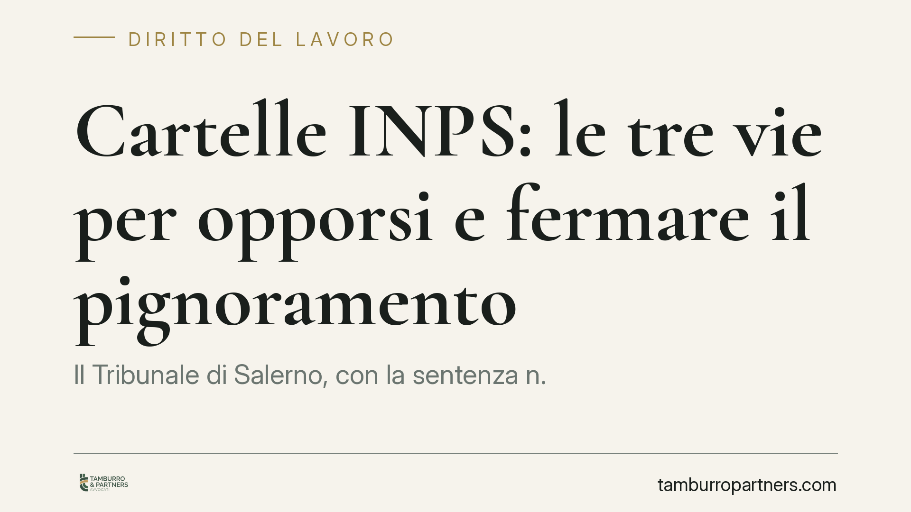

Cartelle INPS: le tre vie per opporsi e fermare il pignoramento
Il Tribunale di Salerno, con la sentenza n. 1276 del 6 luglio 2026, riordina le tre strade per contestare le cartelle esattoriali INPS: opposizione al ruolo, opposizione all'esecuzione e rilievo dei vizi formali. Chi riceve un'intimazione di pagamento ha strumenti precisi per reagire, ma i termini sono brevi e sbagliare rimedio può precludere la difesa.

Il caso
La pronuncia interviene su un tema che tocca molti lavoratori autonomi e datori di lavoro: la contestazione delle cartelle di pagamento emesse per contributi previdenziali INPS. Il Tribunale di Salerno chiarisce quando e come è possibile intervenire, distinguendo tre rimedi che hanno presupposti, giudici e termini diversi. La distinzione non è teorica: scegliere lo strumento sbagliato può significare vedersi dichiarare inammissibile l'opposizione, con l'esecuzione che prosegue.
Inquadramento normativo
La materia dei crediti previdenziali iscritti a ruolo è disciplinata dall'art. 24 del D.Lgs. n. 46/1999. Questa norma prevede una prima via specifica: l'opposizione al ruolo (o "opposizione ai sensi dell'art. 24"), che serve a contestare l'esistenza o l'ammontare del credito contributivo. È competente il Giudice del Lavoro e il termine è di quaranta giorni dalla notifica della cartella. In sostanza, qui si discute del merito: se il contributo è dovuto o meno.
Accanto a questa, il codice di procedura civile prevede due rimedi generali. L'opposizione all'esecuzione (art. 615 c.p.c.) contesta il diritto stesso di procedere all'esecuzione forzata, ad esempio perché il credito è prescritto o già pagato. L'opposizione agli atti esecutivi (art. 617 c.p.c.) riguarda invece i vizi formali degli atti: notifica irregolare, cartella priva di elementi essenziali, difetto di motivazione. Per l'art. 617 il termine è particolarmente stretto, venti giorni dalla conoscenza dell'atto viziato. Va ricordato anche l'art. 30 del D.L. n. 78/2010, che disciplina l'avviso di addebito INPS, titolo esecutivo che ha in gran parte sostituito la vecchia cartella per i contributi.
Cosa cambia per chi riceve la cartella
La sentenza è utile perché fissa un principio pratico: ciascuna contestazione ha il suo binario. Se si vuole negare di dover pagare quel contributo, si va davanti al Giudice del Lavoro entro quaranta giorni. Se il credito esiste ma è ormai prescritto, o l'esecuzione è stata avviata senza titolo valido, lo strumento è l'art. 615 c.p.c. davanti al Giudice dell'Esecuzione. Se invece il problema è un difetto della cartella o della notifica, si usa l'art. 617 c.p.c., con il termine breve di venti giorni.
Il punto delicato è la prescrizione: i contributi previdenziali si prescrivono in cinque anni. Se l'INPS o l'Agente della Riscossione agiscono oltre quel termine senza atti interruttivi validi, l'opposizione all'esecuzione può bloccare il recupero. Ma occorre eccepirla con lo strumento corretto e nei tempi.
Un altro aspetto pratico riguarda la sospensione del pignoramento. La sola proposizione dell'opposizione non ferma automaticamente l'esecuzione: bisogna chiedere espressamente al giudice un provvedimento di sospensione, dimostrando il rischio di un danno grave e la fondatezza delle ragioni. Senza questa istanza, il pignoramento prosegue anche a giudizio pendente.
Cosa fare in concreto
- Verificate subito la data di notifica della cartella o dell'avviso di addebito: da lì decorrono i termini, che sono brevi e non prorogabili. Annotate la data esatta.
- Individuate la natura della contestazione: merito del credito, prescrizione o vizio formale. È questo che determina il rimedio e il giudice competente.
- Controllate la prescrizione quinquennale: ricostruite tutti gli atti interruttivi ricevuti negli ultimi cinque anni per capire se il credito è ancora esigibile.
- Chiedete la sospensione dell'esecuzione contestualmente all'opposizione, se è già in corso un pignoramento: senza istanza espressa il recupero non si arresta.
- Raccogliete la documentazione contributiva (estratto conto INPS, versamenti effettuati, eventuali definizioni agevolate) prima di ogni iniziativa: la prova del pagamento o dell'estinzione è spesso decisiva.
Consigliamo di non attendere l'atto di pignoramento per reagire: l'intervento tempestivo alla ricezione della cartella amplia le possibilità difensive e riduce il rischio di decadenze.
Disclaimer
Contributo informativo a cura di Tamburro & Partners - Avv. Giuseppe Tamburro. Non costituisce parere legale.
Ogni storia di lavoro ha i suoi tempi.
Se gestisci HR e vuoi un confronto su contenzioso, ispezioni o licenziamenti, scrivi allo studio. Ti rispondiamo entro un giorno lavorativo.